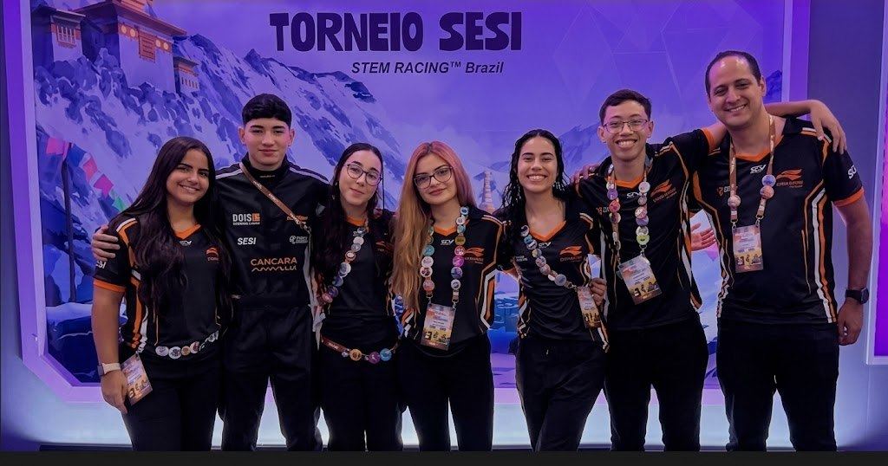
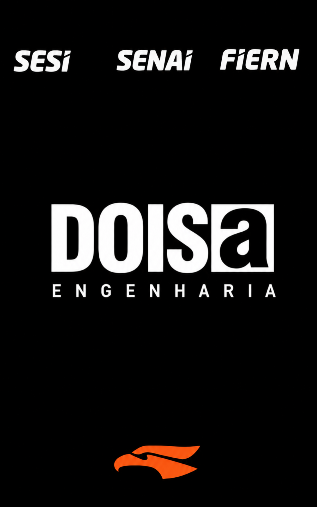
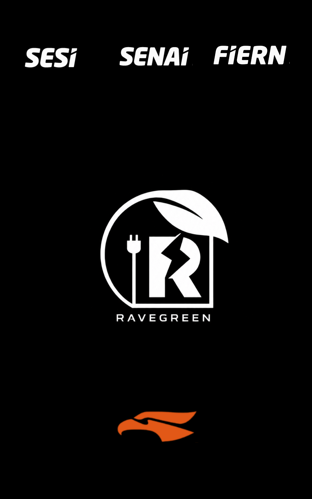
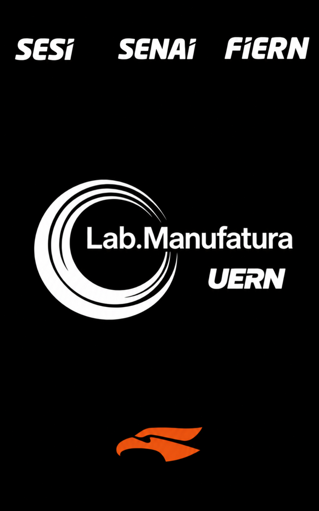

O NOME
É DA TERRA.
O OLHAR,
DO FUTURO.
A gente não nasceu
para ficar no mesmo lugar.
A Carcará Lux leva o Rio Grande do Norte para a STEM Racing. Aqui, criatividade e engenharia encontram gente disposta a perguntar, experimentar e construir junto.
O carcará está no nosso nome e no nosso símbolo. É dessa origem que vem a nossa vontade de explorar o próximo desafio.
Acompanhe a equipePEQUENO NA ESCALA.
GRANDE NAS IDEIAS.
O que faz um carro vai muito além da forma.
Explore as etapas que conectam uma ideia à pista.
TUDO COMEÇA COM UMA PERGUNTA.
CADA ANO,
UMA NOVA PARTIDA.
Escolha um ano.
Conheça um capítulo do nosso percurso.

Velocidade que deixa marca.
No Festival SESI de Robótica em São Paulo, a Carcará Lux conquista o terceiro carro mais veloz da F1 in Schools. Um resultado de velocidade, registrado pela FIERN.
CARRO MAIS VELOZ
F1 in Schools · Festival SESI de Robótica.
Resultado de velocidade, não de classificação geral.
COM ELAS.
A voz da equipe também chega fora da pista. Com o projeto Acelerando com Elas, integrantes participaram da conversa sobre a presença de mulheres na indústria.
Conheça o projetoPATROCINADORES
CARCARÁ LUX.


